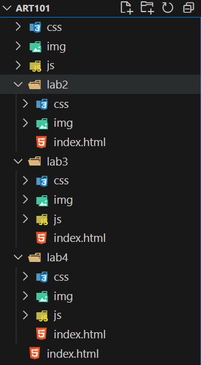

The idea of this lab was to further create a local filestructure on my computer and add index.html files.
It was easy creating the file structure once I got the hangof it, but I had soem difficulty creating index.html files andmaking them work right.
Well you are looking at the index.html file I created. Hereis the file structure that I made:
